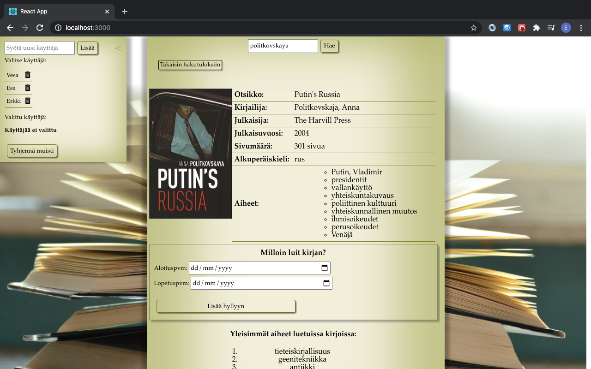

Harjoitustyö JAMKin "Web-ohjelmointi"-kurssille
Linkki Youtube-demovideoon
Tehnyt:
Esa Tervonen
t9tees00@students.oamk.fi
13.8.2020
Tavoitteena harjoitustyössä oli tehdä sovellus, johon käyttäjä voi tallentaa lukemiensa kirjojen tietoja ja tarkastella dataa kaavioiden muodossa. Alla suunnitteluvaiheessa laadittu kaaviokuva sovelluksen toiminnasta.
Sovellus on toteutettu React-kirjastoa hyödyntäen. Toiminnallisuudet on eritelty omiin funktiokomponentteihin ja tiedonvälitykseen komponenttien välillä käytettiin useContext-hookia ja tilamuuttujien hallintaan useState-hookia. Lisäksi funktioiden suoritusten ajoituksen apuna oli useEffect-hook.
Käyttäjien tiedot sekä tiedot kirjoista tallennetaan samaan userdata.json-tiedostoon. Kehitysvaiheessa käytettiin localhost json-serveriä http-kutsuja varten. Backend-ratkaisuna lopullisessa tuotteessa voisi toimia express / MongoDB -yhdistelmä, mutta backendin rakentamisen todettiin olevan tämän kurssin aihealueiden ulkopuolella. JAMKin students-palvelimella olevassa sovelluksessa käyttäjätiedot tallennetaan local storageen.
Kirjojen tiedot haetaan Finnan api:n kautta sekä lisätietoja haetaan OpenLibrary.orgin api:n kautta.
Sovelluksen tekemiseen kului aikaa arviolta noin 60 tuntia, mikä on reilusti yli suunnitellun 40 tunnin.
Suurin syy tekemisen hitauteen lienee tekijän kokemattomuus ohjelmoinnin saralla. Tämä kurssi on ensikosketukseni
javascriptiin eikä muutakaan ohjelmointitaustaa liiemmin ole. Tästä kokemattomuudesta johtuen suunnitteluvaiheessa
ei osattu arvioida, millä tekniikoilla tämänkaltainen sovellus kannattaisi toteuttaa ja projektin edetessä toteutustavat
vaihtelivat muutamaan otteeseen. Suurin viivästys muodostui, kun vaihdoin komponenttien välisen tiedonvälitysmenetelmän propseista kontekstiin.
Tämä harjoitustyö toimi myös alustana React-opiskelulle ja viivästyksiä aikataulussa aiheuttikin myös pähkäilyt siitä miten saada komponentit renderöityä
oikea-aikaisesti.
Pidän lopputulosta kohtalaisen hyvänä, kun yrittää pitää mielessä kurssin tavoitteet. Suunnitellut toiminnallisuudet saatiin
toteutettua ja pahimmat bugit on karsittu. Virhetilanteiden käsittely jäi sovelluksessa alkeelliselle tasolle, mutta en usko
sillä olevan suurelti heikentävää vaikutusta kurssiarviointiin.
Ehdotan harjoitustyöstä arvosanaa 4,5/5
Koska demovideolla ei näy yhtään kansikuvaa, niin tässä kaappaus kirjainfosta, jossa näkyy kansikuva
